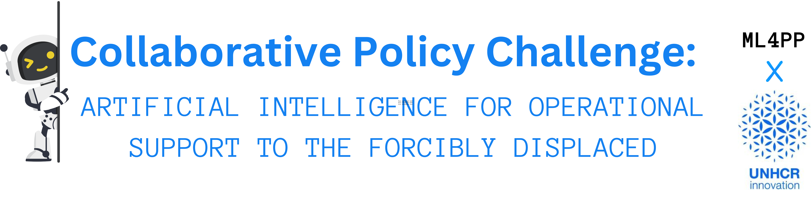

Collaborative Policy Challenge
The Machine Learning for Public Policy course has partnered with the United Nations High Commissioner for Refugees (UNHCR, for short) Innovation Office to bring you a live policy challenge:

On Thursday 7 March, 2024 Rebeca Moreno Jiménez, Lead Data Scientist at UNHCR Innovation, gave a brief lecture on how UNHCR uses Machine Learning and other technological innovations for human mobility policies (via <>Zoom); she introduced us to the live policy challenge she and her team have prepared for us. For those who were not able to attend the lecture, you can find the recording below. Challenge registrations for 2024 are closed. Thanks to all of you who are preparing for it!
The challenge consists of leveraging publicly available data to tackle human mobility challenges; below you can read the entire document prepared by UNHCR Innovation with details about:
Streams: They propose three streams, including Linear Machine Learning Modelling and Predictive Analytics (what this introductory course has mostly prepared us for); Computer Vision, Satellite Imagery and Agent-Based Modelling (perhaps a stream that Economists might find feasible); and Generative AI, Natural Language Processing and text-based analytics (a new field that innovative minds might want to delve with, with the help of GenAI apps out there).
Datasets: They provide an exhaustive list of publicly available datasets that you can easily access either by requesting the dataset (should take a day to receive it) or a simple download. The dataset list is curated for each stream, too!
Ethics: When working in the field of humanitarian aid, and indeed any policy field that affects human lives, there are always ethical considerations that we must be aware of. For example, will our findings - or more specifically, the way we present our findings, harm the very people we are trying to help? UNHCR Innovation discuss these elements briefly in their challenge.
Below you can download the PDF of the challenge:
Collaborative Policy Challenge PDF
Challenge Format
What do we expect to receive?
📝 A one (at most two) page document where you:
State the question you seek to answer with your ML model. The UNHCR PDF on the challenge has some nice suggestions for each stream. Feel free to use one of those, or get inspired by them and state your own question.
Create a policy text in which you describe - for a policy and general audience - which ML tools you are using, what your model has found, and why this finding is relevant for human mobility policies.
A quick note or sentence on how your research is reproducible. Some options include: making the script (R or Python) available upon request to others; Creating a GitHub repository and including all materials there and linking it in your one-pager.
For the one page document, there is no format! Feel free to innovate on graphics, or stick to black and white. Whatever format you believe is best to convey your findings, that’s what you should do.
What is the outcome of the challenge?
One team will be chosen as the winner of the Collaborative Policy Challenge, assessed by our ML4PP team and UNHCR Innovation. Depending on the theme of the winning project, they have the possibility to publish their findings as a UNHCR Innovation blog. Details on bragging and other perks will be discussed later 😊.
All participants who successfully submit a challenge proposal are also eligible for an EduBadge, which can be used for LinkedIn and/or for your CV. Participants from the MSc. of Public Policy an Human Development at UNU-MERIT will receive a certification upon completion of their degree.
Organisation
Enrollment to the challenge closed on 5 March (2024) COB. When we have the full list of participants, we will:
Create semi-random groups. The group you end up with should be relatively diverse, and this is the team with whom you’ll work with to tackle the policy challenge. We understand there are difficulties embedded in team work, including time-zone differences, availability, differing skills… but we encourage you to work through them! For this very same reason, we are giving a full month to work on the challenge. The month starts counting the moment Slack invitations are sent out 😉.
Send you an invitation to a dedicated Slack space to coordinate the challenge. In the slack space, we’ll have a general channel where Stephan, Alex, Michelle, and some of our other instructors will be around to respond to questions, should they arise. There will also be private channels where you and your team can communicate. If you’ve never used Slack before, don’t worry! It’s very intuitive. Join the space via the invitation you’ll get in your email inbox and start exploring. If you’d like a tutorial, feel free to watch the 20 min. step-by-step youtube tutorial below (by Slack themselves!):